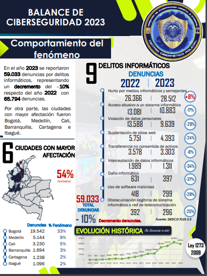

Regresar a pagina Principal
Esta grafica de la base de datos de la convocatoria
Datos Abiertos
nos muestra como los delitos informaticos y estafas por internet son alarmantes.
Esta información es obtenida de la base de datos de la
Policia Nacional Division de Cibernetica
.

Esta información es obtenida de la base de datos de
Kaspersky
empresa de ciberseguridad.